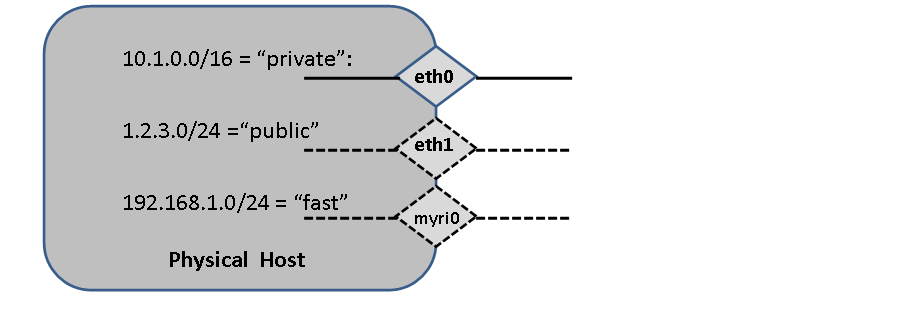

Base Roll: Users Guide: 
| ||
|---|---|---|
| Prev | Chapter 3. Defining and Modifying Networks and Network Interfaces | Next |
There are three types of interfaces that a cluster owner may need to be concerned about: physical, logical, and VLAN (virtual LAN) bridges. Linux (and other OSes like Solaris) support logical interfaces that share a particular physical network port. The following shows physical network devices and associations of those devices to a named network (or subnet, used interchangably in this discussion). In the figures below, the /<nn> notation is a standard method of how to specify the number of bits in the netmask. Examples include: /24=255.255.255.0 (Class C subnet), /16=255.255.0.0 (Class B subnet), /8=255.0.0.0 (Class A subnet) and /25=255.255.255.128

FIGURE: Hosts can have any number of physical networking devices. Every Rocks node must have eth0 defined (the private network). Frontends also must have eth1 (the public network). Other devices could be myri0 (for Myrinet) or ib0 (for Infiniband).
Adding a new network interface to a host can be done from the command line. For example, to add an interface named "myri0" with IP address 192.168.1.10 on the logical subnet "fast":
[root@rocks ~]# rocks add host interface compute-0-0-1 iface=myri0 subnet=fast ip=192.168.1.10 [root@rocks ~]# rocks list host interface compute-0-0-1 SUBNET IFACE MAC IP NETMASK GATEWAY MODULE NAME VLANID private eth0 00:16:3e:00:00:11 172.16.254.192 255.255.255.0 ------- xennet compute-0-0-1 ------ fast myri0 ----------------- 192.168.1.10 255.255.255.0 ------- ------ ------------- ------ |
You can also set other fields for a host interface (if the field is one of [mac, ip, gateway, module, name, vlanid]) with the command rocks set host interface <field> <host> iface=<iface> value. To set the name associated with the myri0 interface to compute-myri-0-0-1 on the node compute-0-0-1, execute:
[root@rocks ~]# rocks set host interface name compute-0-0-1 iface=myri0 compute-myri-0-0-1 [root@rocks ~]# rocks list host interface compute-0-0-1 SUBNET IFACE MAC IP NETMASK GATEWAY MODULE NAME VLANID private eth0 00:16:3e:00:00:11 172.16.254.192 255.255.255.0 ------- xennet compute-0-0-1 ------ fast myri0 ----------------- 192.168.1.10 255.255.255.0 ------- ------ compute-myri-0-0-1 ------ |